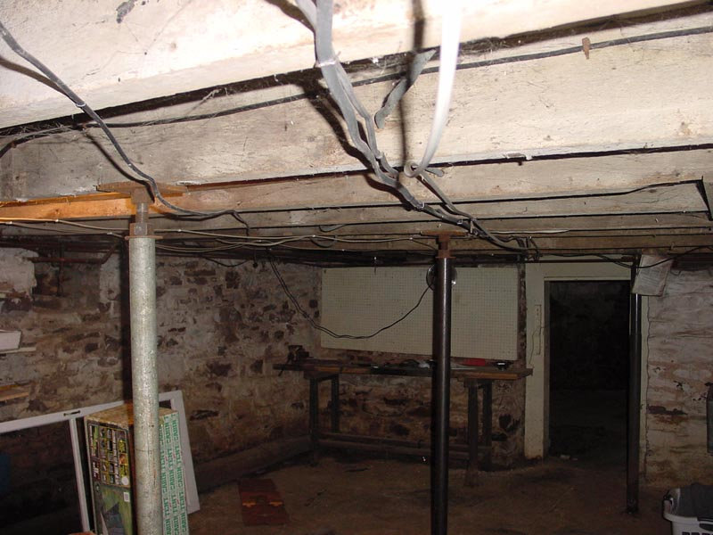

|  |
Walking over towards the workbench you can marvel the artistic placement of various ages of live electric cords in the ceiling. Note how some go through floor joists where others are just stapled on to them. Also note how some go under or around the "temporary" floor joists. |